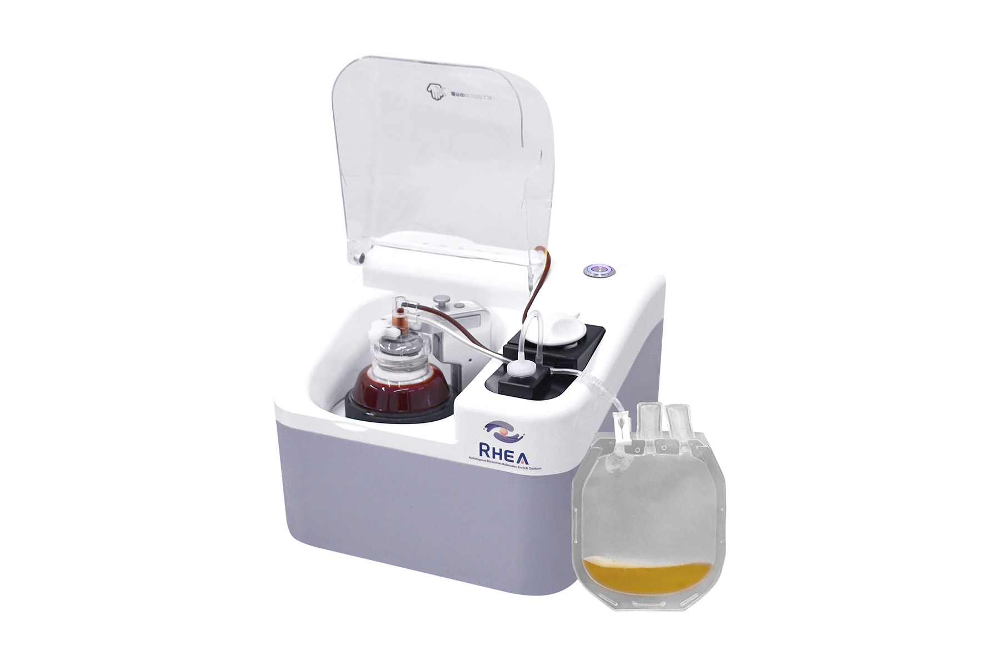
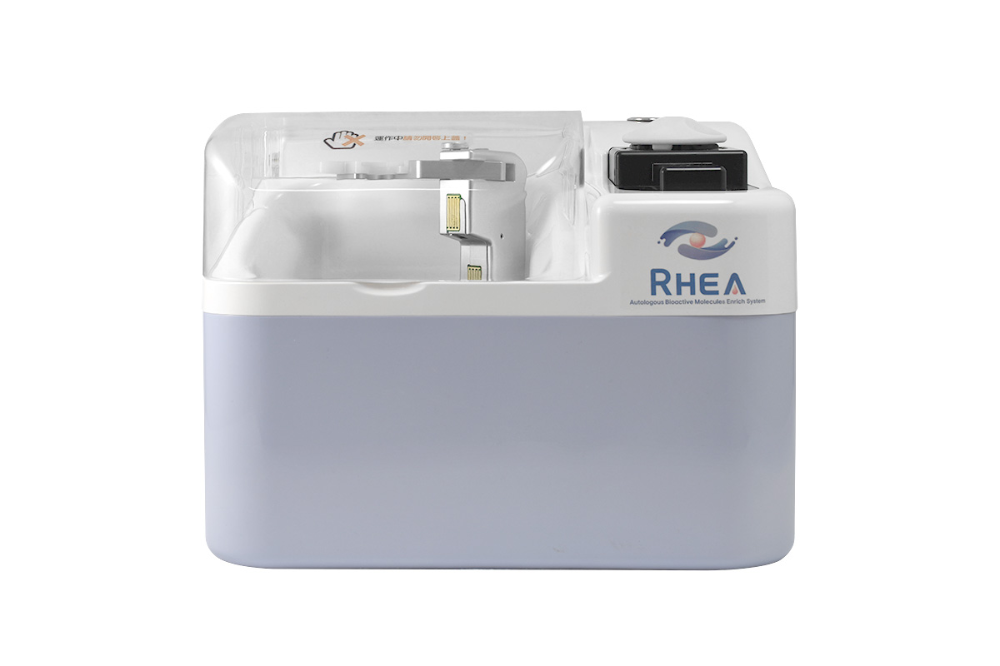

완전 자동 폐쇄형
일회용 키트 안에서 원심분리부터 수집까지 닫힌 경로로 진행되어, 공정 중 오염 위험을 줄이도록 설계되었습니다.
Rhea는 전혈 60ml를 자동으로 원심분리하고, 센서로 PRP 층을 감지해 PRP와 PPP를 각각 주사기에 수집하는 자가 PRP 분리 시스템입니다.

특징
키트를 장착하고 시작을 누르면 혈액 주입, 원심분리, 수집이 자동으로 이어집니다.
일회용 키트 안에서 원심분리부터 수집까지 닫힌 경로로 진행되어, 공정 중 오염 위험을 줄이도록 설계되었습니다.
원심분리가 끝나면 센서가 목표 층인 PRP를 감지하고, 펌프가 PRP와 PPP를 각각의 주사기에 나눠 수집합니다.
Latham 보울 방식을 적용해 원심분리 중 혈구끼리의 간섭과 손상을 줄이도록 설계되었습니다.
프로토콜 선택과 키트 장착을 화면 안내에 따라 진행합니다. 준비 시간은 약 5분입니다.
사용 절차
사용 설명서의 절차입니다. 혈액 주입부터 PRP·PPP 수집까지는 장비가 자동으로 진행합니다.
환자에게서 전혈 60ml를 채취해 항응고제가 든 혈액백이나 주사기에 담습니다.
프로토콜 A는 PRP 3ml, 프로토콜 B는 PRP 6ml를 추출합니다.
화면 안내에 따라 일회용 키트, 주사기, 혈액백을 장착합니다.
시작을 누르면 혈액 펌프가 혈액을 원심분리 보울로 보냅니다.
6,500 RPM으로 약 3분간 원심분리합니다.
센서가 PRP 층을 감지하면 펌프가 PRP와 PPP를 두 개의 주사기에 각각 수집합니다.
사양
제조사 사용 설명서와 소개 자료 기준입니다. 비어 있는 항목은 공식 사양서 발행 시 채워집니다.

| 제품명 | Rhea Autologous Bioactive Molecules Enrich System |
|---|---|
| 전혈 처리량 | 60 ml |
| PRP 수집량 | 3 ml (프로토콜 A) / 6 ml (프로토콜 B) |
| PPP 수집량 | 10–20 ml (Hct에 따라) |
| 원심분리 속도 | 6,500 RPM |
| 원심분리 시간 | 약 3분 |
| 준비 시간 | 약 5분 |
| 방식 | 완전 자동 · 폐쇄형 · 일회용 키트 |
| 조작 | 터치스크린 |
| 의료기기 등급 | Class II (제조사 소개 자료 기준) |
| 정격 전원 | 사양 확정 예정 |
| 치수 (W×D×H) | 사양 확정 예정 |
| 중량 | 사양 확정 예정 |
구매 검토 자료
의료기관 도입 검토에 필요한 문서의 준비 현황입니다. 준비되는 대로 요청하신 분께 먼저 보내드립니다.
전체 기술 사양과 일회용 키트 구성
국내 의료기기 허가 사항과 인증서 사본
프로토콜별 사용 절차와 주의 사항
기관 조건에 맞춘 견적과 시연 일정